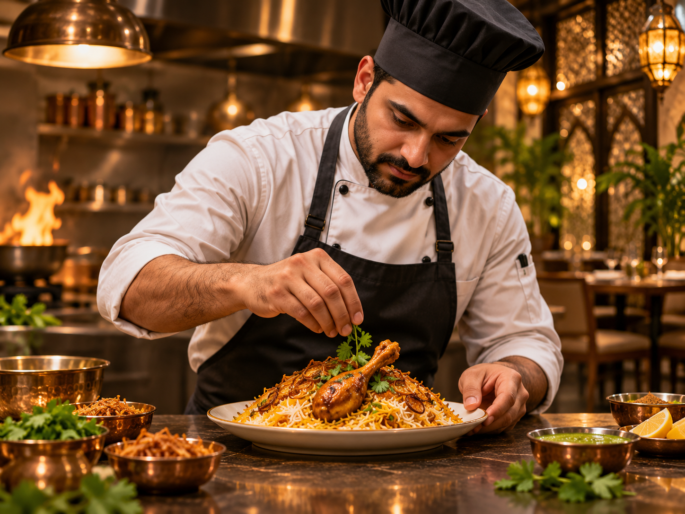

Authentic Inspiration
Recipes and flavors that honor Pakistan's rich culinary traditions.
OUR STORY
A fictional restaurant concept celebrating the warmth and richness of Pakistani food.

WELCOME TO TASTEKITCHEN
TasteKitchen imagines a place where timeless recipes meet a welcoming, contemporary dining experience. The menu takes inspiration from home kitchens, bustling food streets and family gatherings across Pakistan.
From the aroma of fresh naan to the rich flavors of karahi, our concept celebrates food as a reason to come together.
Explore Our Menu ↗WHAT WE BELIEVE
Recipes and flavors that honor Pakistan's rich culinary traditions.
Classic dishes presented with care, balance and a modern touch.
A welcoming atmosphere for families, friends and celebrations.
BEHIND THE PLATE
Our fictional chef story represents the patience, craft and attention behind memorable Pakistani food. Every plate begins with thoughtful ingredients and an appreciation for tradition.
This is a demonstration website, not a real restaurant or chef biography.
